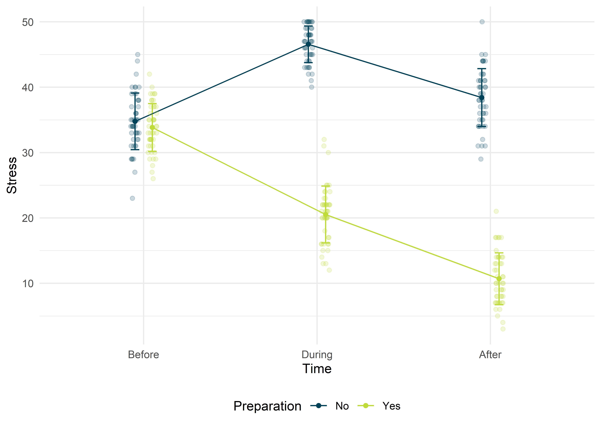
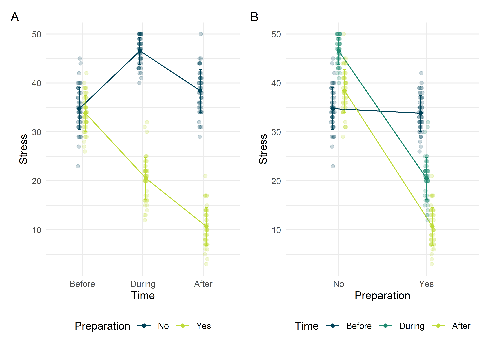
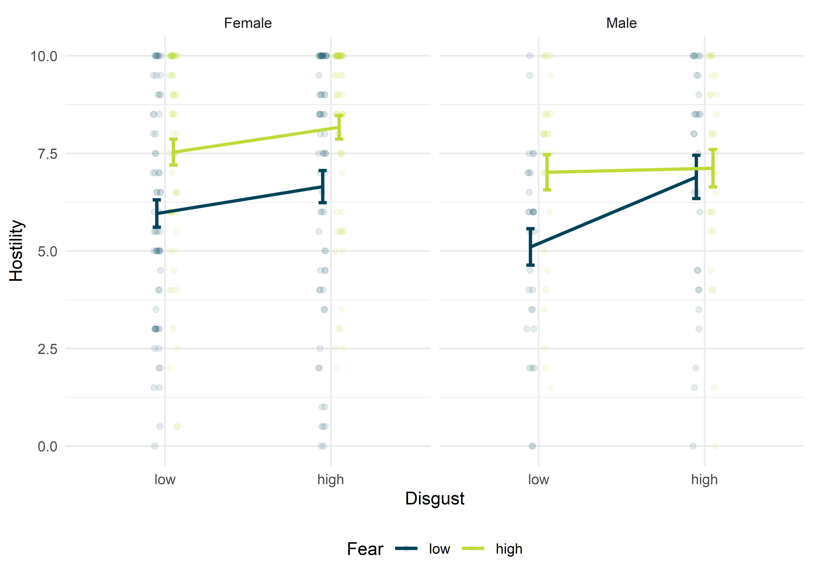

Die mixed ANOVA, oder auch gemischte ANOVA, nutzt man, wenn man die Einflüsse von sowohl Zwischensubjekt- als auch Innersubjektfaktoren gleichzeitig untersuchen will. Bis jetzt haben wir nur die Einflüsse von entweder Zwischensubjekt- oder Innersubjektfktoren untersucht. Ziemlich häufig kommt es aber auch vor, dass wir beides gleichzeitig untersuchen wollen. Beispielweise erheben wir im Rahmen einer klinischen Studie Daten über die Zeit hinweg, so etwa vor und nach einer Therapie. Der entsprechende Innersubjektfaktor wäre hier etwas wie “Zeit”, weil wir diese beiden Messungen pro Proband (“innerhalb” der Probanden) durchführen. Gleichzeitig haben wir die zu untersuchende Therapie auch gegen eine Kontrollgruppe getestet, also bekamen einige Probanden die zu untersuchende Therapie und einige einen Placebo. Jetzt haben wir gleichzeitig auch ein Zwischensubjekt-Design, weil die Probanden natürlich nicht in beiden Gruppen, sondern nur in einer waren. Der wirklich interessante Effekt einer mixed ANOVA ist der Interaktionseffekt zwischen der Innersubjekt- und der Zwischensubjektvariablen, weil dieser angeben würde, ob der Einfluss der Innersubjektfaktors zwischen den Gruppen unterschiedlich ist (vice versa).
Alle Berechnungen und Abbildungen können wir mit unseren Standardpaketen durchführen. Wir benötigen das tidyverse zum Data Wrangling und zur Visualisierung der Daten. haven benötigen wir für den Import von SPSS-Dateien und rstatix für statistische Analysen. Wenn man sich den Import und das Bereinigen der Daten sparen möchte (Schritte, die man dennoch üben sollte), findet man die Daten auch im Paket costatcompanion.
Wir interessieren uns für den Verlauf des Stress-Niveaus von Studenten kurz vor, während und nach einer Klausur. Dabei betrachten wir gleichzeitig zwei Gruppen, nämlich jene Studenten, die sich auf die Klausur explizit vorbereitet haben und jene, die lieber den botanischen Garten der Ruhr-Universität Bochum, oder die Sonne am Aasee in Münster genossen haben.
Die Daten finden wir im costatcompanion als exam_stress, oder, wie immer, als SPSS-Datei im Daten-Ordner des GitHub Repositories. Der Datensatz enthält vier Variablen: Die Probanden-ID (id), den Hinweis darauf, ob sich derjenige Proband auf die Klausur vorbereitet hat (preparation, mit den Faktorstufen “No” und “Yes”), den Zeitpunkt der Messung (time, mit den Faktorstufen “Before”, “During” und “After”) und das Stress-Niveau auf einer Skala von 0 – 50 (stress). Dabei bedeuten niedrige Werte wenig Stress und hohe Werte viel Stress. Wir berechnen also eine 2 \(\times\) 3 gemischte ANOVA mit dem Zwischensubjektfaktor “Vorbereitung” mit zwei Faktorstufen und dem Innersubjektfaktor “Zeit” mit drei Faktorstufen.
## # A tibble: 288 x 4
## id preparation time stress
## <int> <fct> <fct> <dbl>
## 1 1 No Before 39
## 2 1 No During 43
## 3 1 No After 44
## 4 2 Yes Before 38
## 5 2 Yes During 30
## 6 2 Yes After 13
## 7 3 No Before 33
## 8 3 No During 49
## 9 3 No After 38
## 10 4 Yes Before 36
## # ... with 278 more rowsAuch mit mixed ANOVAs bewegen wir uns im allgemeinen linearen Modell, weshalb hier auch die üblichen Voraussetzungen gelten. Wir müssen unsere Aufmerksamkeit jedoch explizit auf die Varianzhomogenität und die Sphärizität richten.
Wie immer beginnen wir damit, uns die basalen deskriptiven Statistiken ausgeben zu lassen und die Daten in Abbildungen zusammenzufassen.
## # A tibble: 6 x 15
## preparation time variable n min max median q1 q3 iqr mad
## <fct> <fct> <chr> <dbl> <dbl> <dbl> <dbl> <dbl> <dbl> <dbl> <dbl>
## 1 No Befo~ stress 48 23 45 34.5 32 38 6 3.71
## 2 No Duri~ stress 48 40 50 47 44.8 49 4.25 2.96
## 3 No After stress 48 29 50 38.5 35 41 6 4.45
## 4 Yes Befo~ stress 48 26 42 33.5 31.8 37 5.25 3.71
## 5 Yes Duri~ stress 48 12 32 21 17 22 5 2.96
## 6 Yes After stress 48 3 21 10 7.75 14 6.25 4.45
## # ... with 4 more variables: mean <dbl>, sd <dbl>, se <dbl>, ci <dbl>
Wir bekommen eine relativ gute Idee davon, dass beide Gruppen ungefähr auf einem gleichen Stress-Niveau starten, dann nimmt der Stress für die Gruppe der nicht vorbereiteten jedoch während der Klausur zu und nimmt nach der Klausur zwar ab, bleibt aber über dem Ausgangs-Niveau. Die Gruppe der Vorbereiteten hingegen erlebt während und im Anschluss an die Klausur einen Abfall des Stress-Niveaus.
Die Voraussetzung der Sphärizität wird während der Durchführung der ANOVA automatisch geprüft, deshalb müssen wir sie nicht vorher prüfen.
Die Durchführung ist wie immer kurz und schmerzlos.
## ANOVA Table (type III tests)
##
## $ANOVA
## Effect DFn DFd F p p<.05 ges
## 1 preparation 1 94 1346.963 1.62e-57 * 0.844
## 2 time 2 188 192.452 3.24e-46 * 0.560
## 3 preparation:time 2 188 368.335 9.29e-66 * 0.709
##
## $`Mauchly's Test for Sphericity`
## Effect W p p<.05
## 1 time 0.93 0.034 *
## 2 preparation:time 0.93 0.034 *
##
## $`Sphericity Corrections`
## Effect GGe DF[GG] p[GG] p[GG]<.05 HFe DF[HF]
## 1 time 0.934 1.87, 175.68 2.28e-43 * 0.953 1.91, 179.11
## 2 preparation:time 0.934 1.87, 175.68 1.24e-61 * 0.953 1.91, 179.11
## p[HF] p[HF]<.05
## 1 3.68e-44 *
## 2 8.79e-63 *Unser erster Blick geht in Richtung Mauchlys Test auf Sphärizität. Dieser zeigt uns für unseren Fall an, dass die Voraussetzung der Sphärizität nicht erfüllt ist, da beide \(p < .05\). An dieser Stelle müssen wir unsere Freiheitsgrade wieder korrigieren, wobei wir uns der Korrekatur nach Greenhouse & Geisser (1959) bedienen. Wir erhalten somit sowohl signifikante Haupteffekte (Vorbereitung: \(F(1, 94) = 1347.00, p < .001, \eta^2_G = .844\), Zeit: \(F(1.87, 175.68) = 192.45, p < .001, \eta^2_G = .560\)), wie auch einen signifikanten Interationseffekt (Vorbereitung \(\times\) Zeit), \(F(1.87, 175.68) = 368.34, p < .001, \eta^2_G = .709\). Immer, wenn der Interaktionseffekt signifkant ist, konzentrieren wir uns nur auf diesen, weil die Interpretation von Haupteffekten dann sinlos ist.

Mit der simple effects analysis können wir nun mehrere DInge überprüfen, die wir in der obigen Abbildung aufgezeichnet haben. Einmal könnten wir überprüfen, ob sich die Stress-Werte der Probanden zwischen den Gruppen zu jedem Zeitpunkt unterscheiden (ob also in Abbildung A die Mittelwerte pro Messung signifikant auseinander liegen), oder ob sich die Stress-Werte pro Gruppe zu allen Zeitpunkten unterschieden. Damit würden wir überprüfen, ob sich beispielsweise die Stress-Mittelwerte der Gruppe der nicht vorbereiteten signifikant voneinander unterscheiden (Abbildung B).
Dafür gruppieren wir die Daten anhand unseres gewünschten Faktors, führen einzelne ANOVAs durch und korrigieren die \(p\)-Werte anschließend, weil wir multiple Vergleiche auf einmal durchgeführt haben. Wollten wir den “Effekt” in der linken Abbildung berechnen, würden wir das wie folgt machen.
exam_stress %>%
group_by(time) %>%
anova_test(dv = stress, between = preparation, type = 3) %>%
adjust_pvalue(method = "holm") %>%
add_significance()## # A tibble: 3 x 10
## time Effect DFn DFd F p `p<.05` ges p.adj p.adj.signif
## <fct> <chr> <dbl> <dbl> <dbl> <dbl> <chr> <dbl> <dbl> <chr>
## 1 Before prepar~ 1 94 1.31e0 2.55e- 1 "" 0.014 2.55e- 1 ns
## 2 During prepar~ 1 94 1.22e3 1.41e-55 "*" 0.928 4.23e-55 ****
## 3 After prepar~ 1 94 1.04e3 1.03e-52 "*" 0.917 2.06e-52 ****So könnten wir sagen, dass sich die Stress-Niveaus der Probanden zwischen den Gruppen vor der Klausur nicht signifikant voneinander unterschieden haben (\(F(1, 94) = 1.31, p_\text{adj} = .255, \eta^2_G = .014\)). Während und nach der Klausur war der Unterschied in den Stress-Niveaus zwischen den beiden Gruppen jedoch signifikant (Während: \(F(1, 94) = 1216, p_\text{adj} < .001, \eta^2_G = .928\), Nachher: \(F(1, 94) = 1045, p_\text{adj} < .001, \eta^2_G = .917\)). Dafür ließe sich Hedges’ \(g\) als Effektstärke berechnen.
## # A tibble: 3 x 8
## .y. group1 group2 effsize time n1 n2 magnitude
## * <chr> <chr> <chr> <dbl> <fct> <int> <int> <ord>
## 1 stress No Yes 0.232 Before 48 48 small
## 2 stress No Yes 7.06 During 48 48 large
## 3 stress No Yes 6.55 After 48 48 largeWollen wir für die beiden Gruppen untersuchen, ob sich jeweils die drei Mittelwerte zu den unterschiedlichen Messzeitpunkten voneinander unterscheiden (Abbildung B), könnten wir nach dem Faktor “Vorbereitung” gruppieren.
exam_stress %>%
group_by(preparation) %>%
anova_test(dv = stress, wid = id, within = time) %>%
get_anova_table() %>%
adjust_pvalue(method = "holm") %>%
add_significance()## # A tibble: 2 x 10
## preparation Effect DFn DFd F p `p<.05` ges p.adj
## <fct> <chr> <dbl> <dbl> <dbl> <dbl> <chr> <dbl> <dbl>
## 1 No time 1.76 82.8 136. 2.42e-25 * 0.617 2.42e-25
## 2 Yes time 2 94 394. 1.94e-46 * 0.852 3.88e-46
## # ... with 1 more variable: p.adj.signif <chr>So erhalten wir das Ergebnis, dass sich die Mittelwerte derer, die sich nicht vorbereitet haben, signifikant voneinander unterscheiden, \(F(1.76, 82.8) = 136, p_\text{adj} < .001, \varepsilon_\text{GG} = .881, \eta^2_G = .617\), genauso wie die Mittelwerte derer, die sich vorbereitet haben, \(F(2, 94) = 394, p_\text{adj} < .001, \eta^2_G = .852\).
We found stress levels of students regarding an exam to be dependent on the time of measurement (i.e. before, during, or after an exam) as well as on the fact that a student was prepared for the exam (significant interaction effect of time \(\times\) preparation, \(F(1.87, 175.68) = 368.34, p < .001, \eta^2_G = .709\)). Simple main effects analyses revealed that stress-levels were equal for both preparation groups before the exam, but during and after an exam, these levels were significantly different with effect sizes ranging from Hedges’ \(g = 0.23\) before the exam to \(g = 7.06\) during and \(g = 6.55\) after the exam.
Natürlich hat Rand Wilcox (2017) auch für mixed ANOVAs vorgesorgt und die entsprechenden Funktionen im Paket WRS2 (Mair & Wilcox, 2020) zur Verfügung gestellt. Die Kernfunktion ist bwtrim().
## Call:
## bwtrim(formula = stress ~ time * preparation, id = id, data = exam_stress)
##
## value df1 df2 p.value
## preparation 1230.0558 1 54.1155 0
## time 126.6340 2 51.2131 0
## preparation:time 320.3507 2 51.2131 0Auch hier erhalten wir einen signifikanten Interaktionseffekt, \(p < .001\). Post-hoc-Tests lassen sich mit sppba(), sppbb() und sppbi() für den ersten Haupteffekt, den zweiten Haupteffekt und den Interaktionseffekt ausgeben.
## Call:
## sppbi(formula = stress ~ time * preparation, id = id, data = exam_stress)
##
## Test statistics:
## Estimate
## Before-During No-Yes -25.638
## Before-After No-Yes -27.727
## During-After No-Yes -1.961
##
## Test whether the corrresponding population parameters are the same:
## p-value: 0Gibt es nicht.
Ryan et al. (2013) untersuchten unter anderem, welche Faktoren die Feindseligkeit gegenüber einem Insekt beeinflussen. Dazu zeigten sie einer Reihe von Probanden Bilder von Insekten und ließen deren Feindseligkeit einschätzen. Dabei haben sie die Insekten aufgeteilt in jene, die eher wenig oder total ekelig waren, und jene, die wenig oder total angsterregend waren. Zudem erhoben sie das Geschlecht der Probanden. Die Daten sind aus der JASP Data Library (JASP Team, 2019) und in der Datei bugs.csv
## # A tibble: 93 x 8
## Subject Gender Region Education `Lo D, Lo F` `Lo D, Hi F` `Hi D, Lo F`
## <dbl> <chr> <chr> <chr> <dbl> <dbl> <dbl>
## 1 1 Female North some 6 6 9
## 2 2 Female North advance 10 NA 10
## 3 3 Female Europe college 5 10 10
## 4 4 Female North college 6 9 6
## 5 5 Female North some 3 6.5 5.5
## 6 6 Female Europe some 2 0.5 7.5
## 7 7 Female North some 10 10 10
## 8 8 Female North high 10 10 9
## 9 9 Female North high 9.5 9.5 6
## 10 10 Female Other high 8.5 10 7
## # ... with 83 more rows, and 1 more variable: `Hi D, Hi F` <dbl>Zu Beginn müssen wir die Daten erstmal etwas bereinigen und in die richtige Form bringen. Die Daten müssen länger werden, also nutzen wir pivot_longer(), jedoch müssen wir hier aufgrund der Variablennamen regular expressions nutzen, um die Gruppen voneinander zu trennen. Außerdem entfernen wir die Variablen education und region, weil wir diese für unsere Analyse nicht brauchen.
bugs <- read_csv("data/bugs.csv") %>%
janitor::clean_names() %>%
select(-education, -region) %>%
pivot_longer(
cols = lo_d_lo_f:last_col(),
names_to = c("disgust", "fear"),
names_pattern = "(^[:alpha:]{2})_d_([:alpha:]{2})_f$",
names_ptype = list(
disgust = factor(),
fear = factor()
),
values_to = "hostility"
) %>%
mutate(
across(c(gender), as_factor),
across(c(disgust, fear), fct_recode, low = "lo", high = "hi")
)
bugs## # A tibble: 372 x 5
## subject gender disgust fear hostility
## <dbl> <fct> <fct> <fct> <dbl>
## 1 1 Female low low 6
## 2 1 Female low high 6
## 3 1 Female high low 9
## 4 1 Female high high 10
## 5 2 Female low low 10
## 6 2 Female low high NA
## 7 2 Female high low 10
## 8 2 Female high high 10
## 9 3 Female low low 5
## 10 3 Female low high 10
## # ... with 362 more rowsGucken wir uns zunächst einmal die deskriptiven Statistiken an.
## # A tibble: 12 x 16
## gender disgust fear variable n min max median q1 q3 iqr
## <fct> <fct> <fct> <chr> <dbl> <dbl> <dbl> <dbl> <dbl> <dbl> <dbl>
## 1 Female low low hostili~ 63 0 10 6 3.75 8.5 4.75
## 2 Female low high hostili~ 61 0.5 10 8.5 6 10 4
## 3 Female high low hostili~ 61 0 10 7.5 4.5 9.5 5
## 4 Female high high hostili~ 62 2 10 9.25 7.12 10 2.88
## 5 Male low low hostili~ 29 0 10 6 3.5 7 3.5
## 6 Male low high hostili~ 29 1.5 10 8 6 8.5 2.5
## 7 Male high low hostili~ 29 0 10 8 4.5 9.5 5
## 8 Male high high hostili~ 29 0 10 7.5 6 9 3
## 9 <NA> low low hostili~ 1 8 8 8 8 8 0
## 10 <NA> low high hostili~ 1 8.5 8.5 8.5 8.5 8.5 0
## 11 <NA> high low hostili~ 1 8 8 8 8 8 0
## 12 <NA> high high hostili~ 1 9.5 9.5 9.5 9.5 9.5 0
## # ... with 5 more variables: mad <dbl>, mean <dbl>, sd <dbl>, se <dbl>,
## # ci <dbl>Die unschönen vier letzten Reihen werden durch einen Probanden erzeugt, für den kein Geschlecht hinterlegt wurde.

Frauen scheinen Insekten generell feindlicher gegenüber zu stehen, wenn diese hoch angstauslösend sind (grüne Linie). Außerdem werden Insekten hier auch als feindseliger angesehen, wenn sie hoch ekelig sein. Bei Männern ist das Bild nicht so klar, denn hier scheint es einen Interaktionseffekt zu geben: Bei niedrigem Ekel werden Insekten, die wenig angstauslösend sind, als weniger feindselig eingeschätzt, aber bei hohem Ekel scheint es keinen Unterschied mehr zu machen, wie angstauslösend die Insekten sind, hier scheinen alle Insekten gleich feindselig eingeschätzt zu werden. Das sind Effekte, die in einer gemischten ANOVA untersucht werden können.
Hier untersuchen wir eine 2 \(\times\) 2 \(\times\) 2 gemischte ANOVA mit dem Zwischensubjektfaktor “Geschlecht” mit zwei Faktorstufen (“Female” und “Male”) und den Innersubjektfaktoren “Ekel” (mit den zwei Faktorstufen “low” und “high”), sowie “Angst” (mit den zwei Faktorstufen “low” und “high”).
Die eigentliche Durchführung ist wie immer kurz und schmerzlos.
bugs %>%
anova_test(dv = hostility, wid = subject, between = gender, within = c(disgust, fear), type = 3)## ANOVA Table (type III tests)
##
## Effect DFn DFd F p p<.05 ges
## 1 gender 1 85 0.996 3.21e-01 0.007000
## 2 disgust 1 85 12.061 8.12e-04 * 0.019000
## 3 fear 1 85 32.122 1.94e-07 * 0.052000
## 4 gender:disgust 1 85 0.432 5.13e-01 0.000696
## 5 gender:fear 1 85 1.285 2.60e-01 0.002000
## 6 disgust:fear 1 85 4.688 3.30e-02 * 0.005000
## 7 gender:disgust:fear 1 85 4.688 3.30e-02 * 0.005000Wir erhalten signifikante Haupteffekte für die Innersubjekteffekte “Ekel” (\(F(1, 85) = 12.06, p < .001, \eta^2_G = .019\)) und “Angst” (\(F(1, 85) = 32.12, p < .001, \eta^2_G = .052\)). Darüber hinaus sind zwei Interaktionseffekte signifikant; der zwischen Ekel und Angst (\(F(1, 85) = 4.69, p = .033, \eta^2_G = .005\)) und der zwischen Geschlecht, Ekel und Angst (\(F(1, 85) = 4.69, p = .033, \eta^2_G = .005\)). Ins interessiert im Falle signifikanter Interaktionseffekte immer nur der mit den meisten beteiligten Variablen, weil die einzelne Interpretation aller anderen Effekte im wahrsten Sinne des Wortes sinnlos ist.
Für unsere Ergebnisse heißt das, dass der Zusammenhang zwischen Ekel eines Insekts und Feindseligkeit zu diesem sowohl durch die Angst, die es auslöst, beeinflusst wird, aber auch durch das Geschlecht der Probanden. Bei Frauen finden wir keinen Interaktionseffekt zwischen Ekel und Angst, bei Männern hingegen schon; und genau das sagt uns dieser dreifach-Interaktionseffekt. Es gibt unterschiedliche Verläufe zwischen Männern und Frauen (wie in der obigen Abbildung deutlich wurde).
Das könnten wir durch zwei einfahe ANOVAs pro Geschlecht weiter aufschlüsseln.
bugs %>%
filter(!is.na(gender)) %>%
group_by(gender) %>%
anova_test(dv = hostility, wid = subject, within = c(disgust, fear), type = 3)## Warning: NA detected in rows: 6,40,107,159,194.
## Removing this rows before the analysis.## # A tibble: 6 x 8
## gender Effect DFn DFd F p `p<.05` ges
## <fct> <chr> <dbl> <dbl> <dbl> <dbl> <chr> <dbl>
## 1 Female disgust 1 57 6.40e+ 0 0.014 "*" 1.40e- 2
## 2 Female fear 1 57 3.76e+ 1 0.0000000877 "*" 7.80e- 2
## 3 Female disgust:fear 1 57 1.53e-29 1 "" 2.61e-32
## 4 Male disgust 1 28 5.58e+ 0 0.025 "*" 3.30e- 2
## 5 Male fear 1 28 6.66e+ 0 0.015 "*" 4.10e- 2
## 6 Male disgust:fear 1 28 7.23e+ 0 0.012 "*" 2.60e- 2Wir finden also bei den Frauen nur die beiden Haupteffekte. D.h., dass Insekten als feindseliger eingeschätzt werden, wenn sie ekelig (\(F(1, 57) = 6.40, p = .014, \eta^2_G = .014\)) und angstauslösend sind (\(F(1.57) = 37.6, p < .001, \eta^2_G = .078\)). Am feindseligsten werden Insekten beurteilt, die sowohl ekelig als auch angstauslösend sind.
Bei den Männern finden wir einen signifikanten Interaktionseffekt, \(F(1, 28) = 7.23, p = 0.12, \eta^2_G = .026\), bei dem es bei hohem Ekel keinen Unterschied macht, ob ein Insekt angstauslösend oder nicht ist.
We found a significant three-way interaction between the participants’ gender and the insects’ perceived disgut and fear regarding it’s hostility, \(F(1, 85) = 4.69, p = .033, \eta^2_G = .005\). Because of that, women rated “high” disgusting insects more hostile than “low” disgusting ones, and “high” fearful insects more hostile than “low” fearful ones. Women rated disgusting and fearful insects as the most hostile.
Men on the other hand had a different pattern in rating fearful insects more hostile than not fearful ones when disgust was low, but mean hostility was the same for insects with high disgust, regardless of fearfulness.
Robuste Verfahren gibt es nur für zweifaktorielle mixed ANOVAs.
Greenhouse, S. W., & Geisser, S. (1959). On methods in the analysis of profile data. Psychometrika, 24(2), 95–112. https://doi.org/10.1007/BF02289823
JASP Team. (2019). The JASP Data Library: Version 2. JASP Publishing. https://jasp-stats.org/wp-content/uploads/2019/11/The_JASP_Data_Library__version_2-1.pdf
Mair, P., & Wilcox, R. R. (2020). Robust statistical methods in R using the WRS2 package. Behavior Research Methods, 52(2), 464–488. https://doi.org/10.3758/s13428-019-01246-w
Ryan, R. S., Wilde, M., & Crist, S. (2013). Compared to a small, supervised lab experiment, a large, unsupervised web-based experiment on a previously unknown effect has benefits that outweigh its potential costs. Computers in Human Behavior, 29(4), 1295–1301. https://doi.org/10.1016/j.chb.2013.01.024
Wilcox, R. R. (2017). Introduction to Robust Estimation and Hypothesis Testing (4th ed.). Elsevier Academic Press.